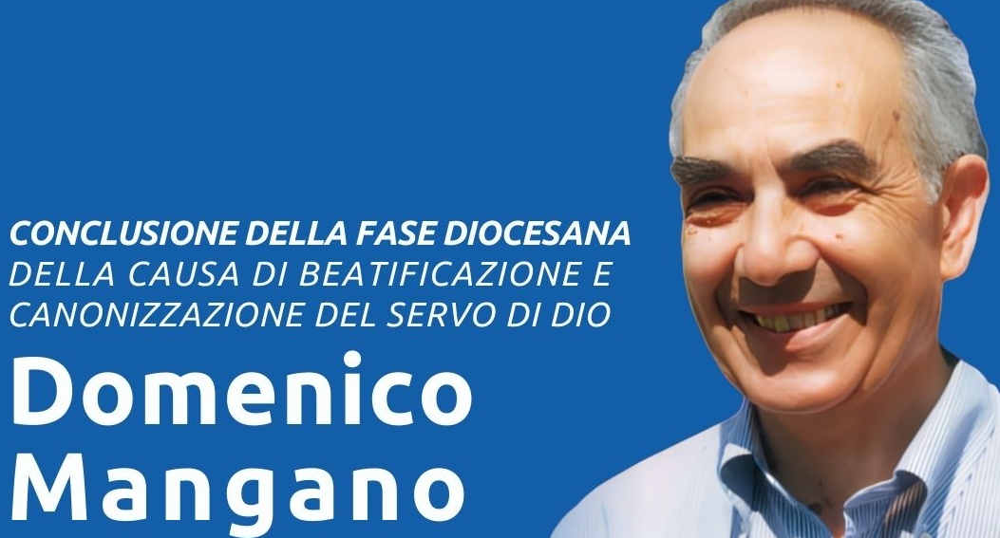

E’ solo un breve ricordo affettuoso e grato per questa persona di grande spessore a ogni livello. Soprattutto perché vedo il silenzio (disinteresse?) da parte di chi dovrebbe sentirsi onorato di averlo avuto collaboratore e anche amico delle istituzioni.
Perché dico questo? Il Movimento dei Focolari ha incontrato in Domenico una presenza spirituale e sociale più che qualificata.
E lo hanno proposto come esempio da seguire.
La Chiesa ha riconosciuto questa ricchezza e il sabato 17 di gennaio si è conclusa a Rocca di Papa, nel centro del Movimento dei Focolari, la chiusura della fase diocesana per la causa di beatificazione di Domenico, servo di Dio.
Domenico aveva nel suo DNA spirituale-sociale il senso di una vita a servizio, non per essere servito.
Attento, rispettoso, competente, sapeva ascoltare, capire e si muoveva per risolvere, non per delegare o rimandare promettendo.
E lo so per esperienza personale quando lo contattavo per risolvere problemi di persone semplici incapaci di giostrarsi nella burocrazia a volte così efficiente che restava burocratica.
Pensando a lui e ad amici comuni dello stesso stampo, come il Prof. Agostino Moscatelli, sempre di Viterbo (anche lui deceduto, il 19 luglio 2022), mi venivano in mente altri nomi come: De Gasperis, La Pira, Moro… persone che sapevano coniugare molto bene quello che una politica vera, non quella che vediamo gironzolare oggigiorno, dovrebbe poter fare e avviare nel cammini, non sempre facili, della convivenza.
Dobbiamo forse riprendere in mano quello che un altro grande, Papa Benedetto XVI, insegnava nel suo magistero per la Chiesa e non solo? Il bene comune che non è solo una amministrazione onesta e corretta.
E’ anche rispetto e difesa della cultura che ci ha generati per non ritrovarsi senza radici e quindi senza cammini da camminare.
E’ ricerca della verità, sempre sinfonica senza mai fermarsi alla fruizione di opinioni passeggere, ma sempre con gli occhi voltati verso la ricerca della verità. In dialogo certamente con ogni “cercatore” (Der Suchende direbbe Hermann Hesse nel suo Siddharta), ma alla ricerca.
Fondati nella giustizia e nella carità, perché la giustizia non riuscirà, forse mai, a essere totalmente e sempre giusta.
E qui, la testimonianza di chi si pone a servizio rende “visibile e credibile” il cammino proposto per un modello di società fondato sui valori e non solo sulle strutture di potere. Domenico Mangano credeva in questo.
Amava questo. Viveva questo con il sorriso e la gentilezza paziente.
Un incontro conferenza dibattito sul suo pensiero sarebbe di grande utilità.
Soprattutto in questo momento storico di vita politica deludente. La politica è “ALTRO” e Domenico era appassionato, o malato sano di “ALTRITE”.
Don Gianni Carparelli